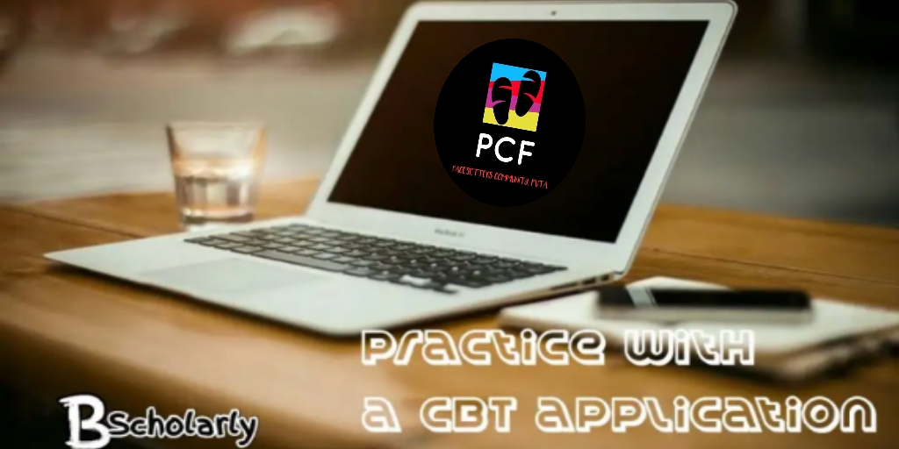

If you have been searching the internet for a guide on how to pass Post UTME screening or examination of any university, i enjoin you to read this article painstakingly.
Trust me; this article contains every single thing you need to pass 2019/2020 post UTME examination.
Meanwhile, before i discuss the tips to pass post UTME examination, i would like to explain what post UTME examination is all about.
WHAT IS POST UTME AND WHY DO UNIVERSITIES CONDUCT THE EXAM?
From the word “POST” which means “After“, one can say that Post UTME is an examination conducted after JAMB UTME examination or screening.
The examination is usually conducted by universities in Nigeria after JAMB UTME examination in order to admit the best out of the thousands of students that apply for admission through JAMB every year.
Nowadays, institutions in Nigeria use post UTME examination as the key criteria for admitting students.
For instance, in some universities, if you pass very well in JAMB examination; but fail to pass very well in post UTME Examination, you will not gain not admission. Even if you managed to be offered admission, it may not be into your choice of course.
From this table of facts, it is quite apparent that passing post UTME examinations is very essential to gain admission into any Nigerian universities.
HOW TO PASS POST UTME EXAMINATION FOR 2020/2021
Below are tips to help you prepare and pass post UTME examination:
*Start reading on time;
*Get the recommended textbooks for post UTME examination;
*Create a reading timetable;
*Study never before;
*Go through past post UTME questions;
*Practice with online post UTME apps/software;
*Study and memories previous JAMB questions;
*Always make sure you understand any question you come across;
*Ask God for help;
This is just a list of the tips you need to pass 2020/2021 Post UTME screening. I enjoin you to continue reading this article, as I will quickly explain all the points I raised above.
Believe it or not, if you substantially follow the tips contained in this article, you will pass the impending post UTME excellently well.
1. START READING ON TIME
One of the mistakes you don’t want to make this year, is to start reading for post UTME screening examination when it is already late.The truth is that; you will not cover enough ground if you do so. Post UTME screening examination is not very easy, so don’t think it is just a trivial examination.
In fact, post UTME screening examination in some universities are more difficult than JAMB examination itself. That is why you must start reading on time.
Immediately you are done with your JAMB examination, start reading for post UTME screening examination. Do not relax till it is just one month to the examination. If you do that, then you are putting your chance of success at risk
2. GET THE RECOMMENDED TEXTBOOKS FOR POST UTME EXAMINATION
Getting the right study materials is very essential to pass Post UTME examinations.
Yes, this might be difficult but it is prerequisite to pass Post UTME examinations because of the uncertainty in the way post UTME examinations are conducted in Nigeria.
Sometimes, schools don’t just pick questions from JAMB past questions. They ask questions about the current affairs of Nigeria.
In this cases, it will be very difficult for someone who read only JAMB past questions to pass. Thus, you have to ask about the recommend textbooks for post UTME in your dream school and read them properly.
Doing this will go a long way to help you perform excellently in post UTME examination.
So, it right to say that getting the right materials for post UTME examination, is key to success in the examination.
To get the right study materials, you can ask from aspirants who have written the exam before you. Read textbooks that are recommended by the university you applied for admission.
3. CREATE A READING TIMETABLE
Yes! the next step is to create a timetable. A timetable will help you cover up all you are supposed to read before you exam. It will give you the opportunity to maximise your time effectively, and to prepare aptly for your post UTME examination.
More often than not, students fail to do this on the justification that they can’t strictly follow their timetable.
Well, it is important to know that, you must not follow it strictly. Just make sure you do your best to conform to it.
While creating your timetable, make sure you give more time to difficult subjects. Of course, you know those subjects that usually give you trouble. Read them more often than any other subject.
This will also help you to prepare and pass 2020 Post UTME screening examination.
4. STUDY LIKE NEVER BEFORE
Students usually think that once they have written JAMB examination and passed with good grades, they have done the most important thing that is needed to gain admission in Nigeria. But this is not actually true.
Suffice to say that Post UTME examinations in some Nigerian universities, holds more water than JAMB UTME examination.
Thus, it is very wrong to take Post UTME examination Trivial if you want to gain admission .
To pass Post UTME examination you have to study relentlessly and smartly too. Reading is the ultimate key to pass any examination in Nigeria and that is what you must do.
It is the only way to pass Post UTME examination. If do not read, just be prepared to fail because, there is absolutely no way to cheat in post UTME examinations.
5. GO THROUGH PAST POST UTME QUESTIONS
Another prerequisite tip to help you pass 2020/2021 Post UTME examinations is to study previous questions that have been asked by the university in previous years.
Some universities in Nigeria often repeat their Post UTME exam questions. An example is the University of Nigeria, Nsukka (Also called UNN). Thus, studying past Post UTME questions of the university you aspire to gain admission into, is very essential to pass post UTME examination.
Aside from the fact that Post UTME past questions are likely to appear again in screening, they also inculcate in you, how the university ask her questions.
Studying past Post UTME questions is prerequisite to pass Post UTME examination and that is just the truth of the matter. This tip will help you a lot. You can get past post UTME examinations questions from either the university, or from aspirants who have written the examination before you.
6. PRACTICE WITH ONLINE POST UTME APPS/SOFTWARE/WEBSITE
 In my article on the secrets to pass JAMB examination, I made a list of some prerequisite material a student will need to pass JAMB examination. Among the list is JAMB CBT app/software.
In the same vain, one of the materials you will need to pass post UTME examination is Post UTME app/software/website..
Practicing with online Post UTME apps/software/website will help you to familiarize yourself with the way post UTME questions are asked. It will also help you to reduce fear and tension during your post UTME examination.
This is basically why i recommend all my students to Practice with online Post UTME apps/software. No doubt, it is one of the tentative steps you must follow to prepare and pass post UTME examination this year.
7. STUDY AND MEMORIES PREVIOUS JAMB QUESTIONS
This might sound throw you aback but it is just the truth. JAMB past questions are also very important to pass Post UTME screening examination these days. Some universities go more than just repeating their own past questions.
They pick questions that have been asked in previous JAMB UTME examination. I have research about this and have found out that it is really a great tip to help aspirants pass Post UTME examination.
In fact, the reason why people are able to score upto 314 in that examination is because, they read their JAMB past questions and answers very well. Trust me; you can fail post UTME examination in some schools if you study your JAMB past questions and answers properly.
8. ALWAYS MAKE SURE YOU UNDERSTAND ANY QUESTION YOU COME ACROSS
Believe it or not, Post UTME examination questions are much more confusing than any other exam you can think of. This is why you should develop your understanding skill.
Make sure that while reading your past questions and materials, you are able to understand them. Do not just read and cram them. Try to decipher where the questions are coming from and learn that particular topic very well.
This is very important, especially to aspirants who has not writing post UTME examination before. If you do this, you are making your chances of success in the impending post UTME examination consolidated.
9. ASK GOD FOR HELP
Lastly, to prepare and pass post UTME examination with excellent score, you must seek God’s help. The truth is that you can’t pass without a spiritual being to guide you through.Sometimes, unprecedented things will happen to jeopardise your success in the examination, and if you don’t have a God by your side, then you are bound to fail the examination.
By now, you must have heard of instances where aspirants fail CBT examinations just because of a problem in the computer.
It is not that they didn’t read hard or prepare for the examination. It is just because they didn’t have God by their side. So, to pass the impending post UTME examination, you need to pray to God to put you through.
About The Author
Edeh Samuel Chukwuemeka, Ch.MC
Edeh Chukwuemeka Samuel is a certified Mediator and Conciliator in Nigeria.
He is currently a student at the Faculty of Law, University of Nigeria.
Samuel is bent on disseminating authentic information to every part of the world.